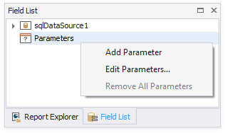
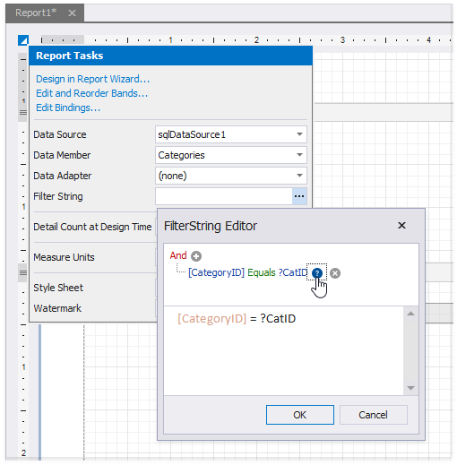
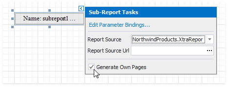
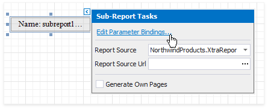

Use Data-Driven Page Sequence
This topic describes how to combine a table report that uses the Portrait page orientation and a chart report that uses Landscape page orientation.

Follow the steps below to create a combined report:
Create a Chart Report
Create a report that shows data in the chart form. Bind the report to a data source. Set the report's Landscape property to true to enable the Landscape page orientation.

Add a parameter to your chart report to identify which data to use for the chart. Right-click Parameters in the Field List and choose Add Parameter.

Select the created parameter and set its Name and Type, and uncheck the Visible option.

Click the report's smart tag. Click the Filter String option's ellipsis button. In the invoked FilterString Editor, construct an expression to compare the key data field to the created parameter. To access the parameter, click the icon on the right until it turns into a question mark.

Save the report.
Create the Base Report
Create a report bound to the same data source as the chart report, and arrange a layout like the one shown below:

Right-click the base report's Detail band and select the Insert Band / Group Footer item in the context menu.

Drag a Subreport item from the Toolbox onto the added group footer band.

Click the sub-report control's smart tag and specify the chart report in the Sub-Report Tasks window:
- Use the Report Source property to assign a predefined report from the Designer.
- Use the Report Source Url property to assign a custom report.

Enable the Generate Own Pages option to print the embedded report on separate pages and use its own page settings.

Bind the chart report's parameter to the base report's data field. Click the subreport's smart tag and select Edit Parameter Bindings in the invoked SubReport Tasks window.

The Parameter Bindings Collection Editor is invoked. Click Add to add a new binding. In the binding properties list, specify the data field to bind to and the parameter name to bind.

Switch to Preview mode to see the combined report.
Your base report's Table of Contents and Document Map include bookmarks from the embedded report. Use the Parent Bookmark property to specify the nesting level for the embedded report's bookmarks.